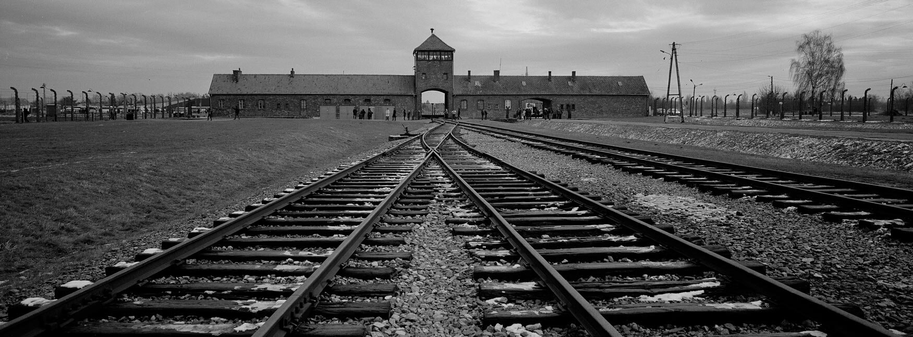

<Nacistički Logori>
Aušvic
Aušvic, poznat i kao Aušvic-Birkenau, bila je mreža koncentracionih i istrebljivačkih logora osnovanih od strane Nacističke Nemačke tokom Drugog svetskog rata. Logor se nalazio u blizini poljskog grada Osvijencima i bio je u funkciji od 1940. do 1945. godine. Procenjuje se da je u Aušvicu ubijeno oko 1,1 milion ljudi, većina njih Jevreja. Druge ciljane grupe za istrebljenje u Aušvicu bile su romi, sovjetski ratni zarobljenici, osobe sa invaliditetom i politicki zarobljenici.
Aušvic se sastojao od tri glavna dela:
- Aušvic I je bio glavni logor i prvobitno je koriščen za političke zarobljenike.
- Aušvic II je bio logor za istrebljenje gde se većina ubistava odvijala.
- Aušvic III je bio radni logor gde su zatvorenici bili koriščeni za prisilni rad u obližnjim fabrikama.
Zatvorenici u Aušvicu su bili izloženi stravičnim uslovima, uključujući glad, bolesti, mučenju i medicinskim eksperimentima. Mnogi zatvorenici su ubijeni u gasnim komorama, a njihova tela su spaljena u krematorijumima.
Aušvic je oslobođjen od strane Sovjetske vojske u Januaru 1945. godine, a muzej je uspostavljen na mestu 1947. godine. Holokaust, od kojeg je Aušvic bio veliki deo, ostaje jedna od najznačajnijih tragedija 20. veka. Sečanje i razumevanje užasa koji su se dogodili u Aušvicu i drugim koncentracionim logorima je važno za sprečavanje sličnih zločina u buducnosti.
Danas, poseta Aušvicu sluzi kao močan podsetnik na tragedije koje su se dogodile i važnost promovisanja tolerancije, razumevanja i ljudskih prava. Napori su u toku da se sačuva mesto i nastavi obrazovanje ljudi o Holokaustu i njegovim lekcijama za ljudskost.
<Nacistički Logori/>
<Nacističke korporacije>
Uspon Nacističke partije na vlast 1933. omogućio je korporacijama da prošire svoj uticaj i moć u Nemačkoj. Korporacije su bile u mogućnosti da povećaju svoj profit i svoj uticaj na nemačku ekonomiju. Ovo je omogućilo korporacijama da povećaju svoj tržišni udeo i profit.
Nacistička vlada je takođe stvorila sistem kartela, koji je omogućio velikim kompanijama da kontrolišu proizvodnju i cene robe. To je omogućilo korporacijama da formiraju monopole i dominiraju čitavim industrijama.
Poznate kompanije koje su sarađivale sa nacističkom nemačkom:
- Fanta
- BMW
- Volkswagen
- Mercedes
- Hugo Boss
Fanta
Tokom Drugog svetskog rata, SAD su uspostavile trgovinski embargo protiv nacističke Nemačke, što je otežavalo izvoz Coca-Cola sirupa. Da bi to zaobišao, Maks Kit, šef kompanije Coca-Cola Deutschland, odlučio je da stvori novi proizvod za nemačko tržište, koristeći samo sastojke dostupne u Nemačkoj u to vreme, uključujući šećernu repu, surutku (sir nusproizvod), i kominu od jabuke. Ime je bilo rezultat sesije razmišljanja, koja je počela tako što je Kit podsticao svoj tim da "iskoristi svoju maštu" (Fantasie na nemačkom), na šta je jedan od njegovih prodavaca, Džo Knip, uzvratio "Fanta!".
BMW
Bayerische Motoren Werke - osnovana je u Minhenu tokom prvog svetskog rata 16. marta 1916. U Drugom svetskom ratu, BM je dizajnirao motore za nacističke borbene avione, kao što je Focke wulf Fw190. Nemački avioni stekli su vazdušnu nadmoć nad Britancima i Francuzima zahvaljujući motorima visokih performansi koje proizvodi BMV, koji su zamenili originalni Mercedesov motor.
Volkswagen
Kompanija Volkswagen nastala je tokom trećeg rajha u pokušaju da stvori pristupačan automobil za nemački narod. Volkswagen je koristio i jevrejski i nejevrejski prisilni rad, prvenstveno iz istočne Evrope. Kompanija je na svom imanju vodila četiri koncentraciona logora i osam logora za prinudni rad.
Mercedes
Najviše rukovodstvo Daimler-Benza pozdravilo je jačanje vojske pod nacionalsocijalizmom, kompanija je postala vodeći proizvođač naoružanja u nacističkoj Nemačkoj. Motori i rezervni delovi za avione, tenkovi i oklopna vozila, teški kamioni, pa čak i veliki deo rakete V-2, proizvedeni su za ratnu mašinu Trećeg Rajha.
Hugo Boss
Kompanija Hugo Boss je bila jedna od kompanija koje su proizvodile crne uniforme za SS. Do 1938. godine, firma je bila fokusirana na proizvodnju uniformi wermahta, a kasnije i uniformi za waffen-SS. Tokom Drugog svetskog rata, Hugo Bos je zapošljavao 140 prinudnih radnika, većinom žena.
<Nacističke Korporacije/>
<Varšavski geto>
Šta je to Varšavski geto?
Varšavski geto je bio zatvoreni zidovski geto u Varšavi, glavnom gradu Poljske, tokom nacističke okupacije u Drugom svetskom ratu. Geto je formiran 1940. godine i zatvoren je 1943. godine, a u njemu je živelo oko 400.000 Jevreja, što je činilo gotovo 30% ukupnog stanovništva grada.
Kakav je tamo bio život?
Život u getu je bio izuzetno težak i okrutan, a ljudi su patili od bolesti, gladi i nehumanih uslovima života. U proleće 1943. godine, nacističke vlasti su započele deportaciju stanovnika geta u koncentracione logore, što je izazvalo otpor u vidu oružanog ustanka u Varšavskom getu. Iako su ustanici bili slabo naoružani i brojčano inferiorni, uspeli su da pruže otpor nacističkim snagama četiri nedelje pre nego što su bili potpuno uništeni.
Varšavski geto danas
Varšavski geto je bio jedan od najvećih i najpoznatijih geta tokom Holokausta i simbol je stradanja i otpora Jevreja tokom nacističke okupacije Evrope. Danas se na mestu nekadašnjeg geta nalazi Muzej Varšavskog geta, posvećen sećanju na žrtve i svedočenju o stradanju Jevreja tokom Drugog svetskog rata.